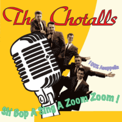

the Chotalls - Sh' Bop A Sing A Zoom Zoom ! - 100% Accappella (Album, 2012)
01 - When I Woke Up This Morning (2:14)
02 - Red Red Robin (2:04)
03 - Bells Of Love (2:53)
04 - Don't Try To Kid Me (2:06)
05 - My Juanita (1:58)
06 - Sweeter Than (2:03)
07 - Tiny Cloud (2:23)
08 - Chitty Bomp (1:45)
09 - Summer Nights (1:48)
10 - Lovebound (1:54)
11 - Zing (Went The Strings Of My Heart) (2:19)
12 - Stand By Me (2:48)
© Blue Art Records :: [Digital]
Notes
Review
354/366 (Project 366)
So Accappella Rock'n'Roll! Of course, with some doowop, traditional pop and folk music inspirations. Oh, I don't even know if you can restrain your emotions while listening to these songs? They will definitely be. It may be ambiguous, but they will surely contain some kind of cuteness and a smile. Although a sensation may appear, what is the difference between just noise and this seemingly melodic, harmonious and beautiful? But a band with a good composition, an interesting approach and their own style. Therefore, it makes you dream at times.
Some tunes act like an alarm clock. But so fancy, so sweetie and somewhat laughable. It is fine, definitely a touching feel. Even if it sounds like something completely dumb... but they are serious in this sense. Some things are about doowopin', some - accappella rockin' and rollin, even marching hymn or traditional pop ballad, folk music too. All with great harmonies, so entertaining and so nimbly.
The tracklist contains a variety of numbers. For almost every taste, although keeping the general groove. Twenty six minutes. Quite so as not to get bored, but also to dig into the sound.. to your heart's content.